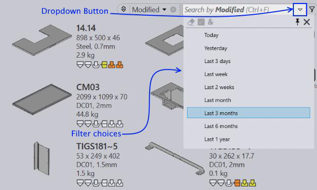

It is possible to search parts, jobs and nest based on their tooling status, production feasibility, used punch and bend tools etc. Pre-defined filter choices enhance the filter usability further.
Based on the selected column, the search icon changes to a drop-down button. Clicking this icon (or using Down Arrow keyboard shortcut, when the keyboard caret is on the search-box) brings up the choices dropdown. The dropdown contains list of items which can be selected to quickly apply a filter choice.
